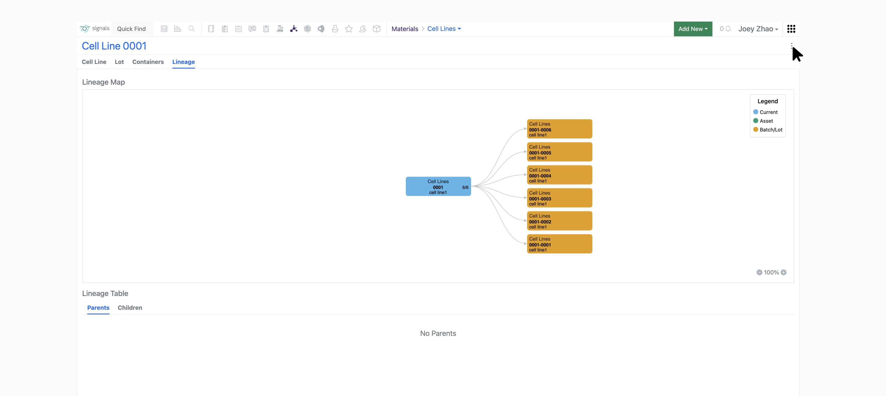
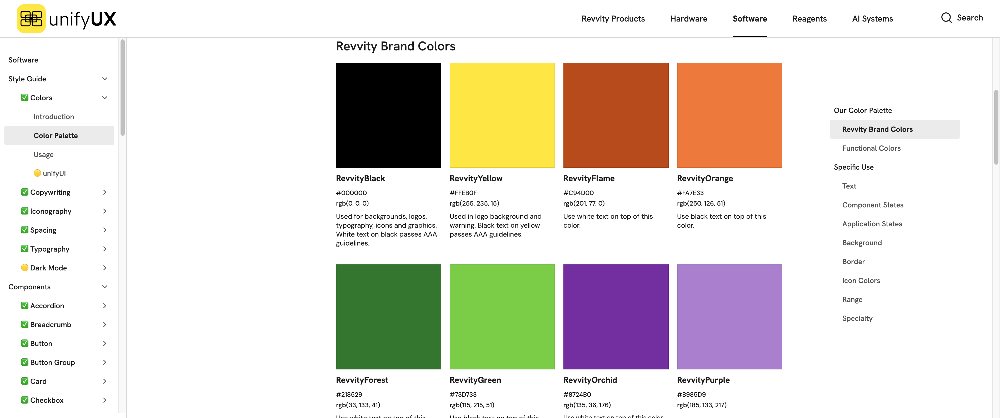
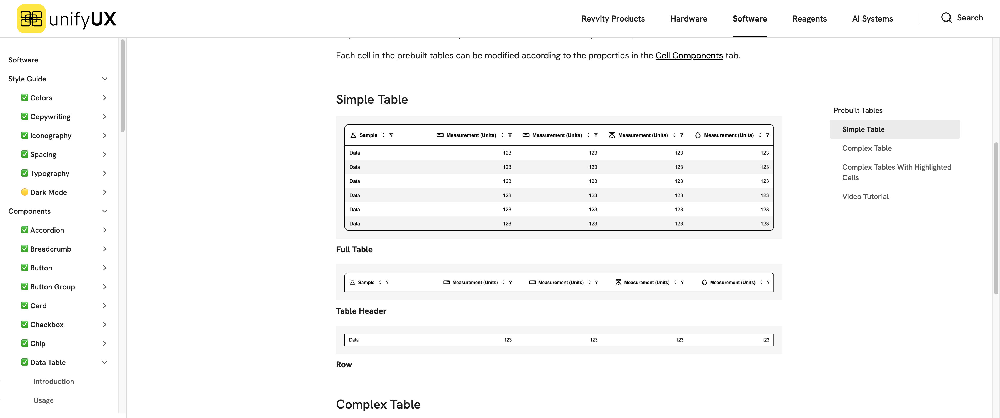
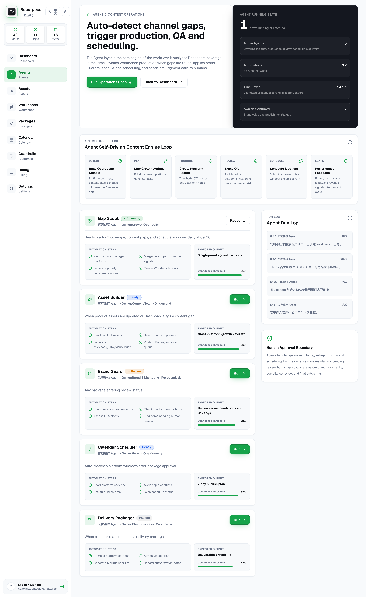

I used to treat my portfolio as a warehouse too. Project background, one page; user personas, one page; journey map, one page; three pages of wireframes; five pages of final designs; and at the very end, one big number stamped "efficiency improved." The material was all there, and the more pages, the more at ease I felt. But a recruiter flipping through a portfolio gives you a few dozen seconds on average, and most of those dozen-plus pages I stuffed in were there to move one person: me.
The one suffering is the reader. He has to finish the hardest piece of work for me, guessing from a pile of gorgeous pages what I actually changed and what makes me the one who changed it. He has no obligation to do that reading comprehension for me. The moment he can't guess it, he flips to the next one.
Later I set myself a fairly ruthless rule, made specifically for cutting pages: if this page is taken away, does the recruiter's judgment of my ability change? When it doesn't change, no matter how well it's drawn, it doesn't deserve to squat in the main narrative taking up space.
Writing the case as a project archive is a mistake I have made. A case should be a short argument that can survive checking: this problem was worth solving, I made that key call, and the evidence can hold that call up. All three in place, and only then is it a case.
A strong UX case study hands the recruiter a map in the first thirty seconds
A reader clicking into the Signals case has to pick up five things in the first thirty seconds. This is a scientific R&D workflow; I am the only product designer on that flow; the team also has one PM and ten engineers; the project ran about five months; the goal was to beat down the cost of tracing from experiment to material. How refined the brand gradient is doesn't even make the list yet.
Once those five sentences are on the table, the complex interface screenshots that follow finally have a ruler to measure against. If roles and constraints aren't shown first, a dense system shot leaves the reader unable to tell: is this an information architecture the designer led and built, or one traced stroke by stroke off a requirements doc? The last thing a portfolio should make the reader do is guess.
The "30-second contract" at the top of a case
- Product
- Who does it actually help, finish a job that costs extra money and extra effort?
- Role
- Did I carry it alone, lead it, or only execute one piece of it?
- Constraints
- Time, tech, compliance, legacy systems, the friction inside the org — which of them were in play?
- Change
- Before and after the project, which task path now runs differently?
- Evidence
- What comes later to prove it. Hold off on declaring victory for now.
A wall covered in sticky notes can't prove you can think
"Research, define, diverge, deliver" is a list of process names, and it proves no ability. Toss in a photo of a wall plastered with stickies, and the most it proves is that stickies appeared in that room that day. What the reader wants to dig out is another kind of thing. Which finding flipped the original plan over? Which constraint made the team grit its teeth and give up the flashier direction?


So a process page is best written in three stretches: finding, decision, cost. An example. We found that adding a few more filters wouldn't help either. Where the scientists were stuck was that they couldn't at all tell which experiment a recommended material had come from. So lineage was promoted from a side helper into a proper module in the object detail. The cost: detail-page density jumped up all at once, and the hierarchy had to be combed again. A process written this way can travel, and it works just as well on the next project.
The bigger the number, the more you owe an account of what it measures
In the Signals task test, the time on one tracing task was pressed from about two hours to forty minutes, off by roughly 66%. Sitting in a portfolio, a number like that truly holds the room. It is also the easiest one to overuse.
I would never write it as "design lifted R&D efficiency by 66%." What we measured was that one specific tracing task, not a scientist's whole day of work. It came out of one usability test, so calling it a long-term live business metric is out of reach. For the product to succeed in the end, the PM's calls, engineering's landing, and the data team's material were all indispensable. Writing these edge-case limits out honestly doesn't drop the project's value. It makes one thing clear instead: I know how far the evidence in my hands can actually walk.
Never write it like this: "Through a new UX, enterprise R&D efficiency improved by 66%."
A component family portrait. Anyone can snap one.
The UnifyUX case is far too easy to tell as a pile of colors, fonts, and buttons. The trouble is, any halfway-mature design system can put those on the table. What my case has to answer are three questions. Why did the team actually need a shared language? Which misaligned spots were quietly manufacturing cost? And how did this set of rules truly work its way, step by step, into the collaboration between design and development?


If the case stops at "I built a design system," the reader sees only an artifact. If it can comb the chain out, from the audit of several scattered products, through tokens, components, and documentation, to the final engineering landing, then this time the reader sees a systemic capability.
Put the ugliest image in, and it scores the most
The most beautiful frame in Finfold is the content workbench. But the one that best proves product judgment is precisely an ugly image, the failure state. One platform's generation has died and the others stay intact; the user can see what went wrong and retry just that one card. Laying this image out is telling people outright: I didn't treat AI as omnipotent magic, and I seriously thought about what to do after it blows up.

The same reasoning extends to every product. If you build payments, you must dare to show the decline and the refund; if you build permissions, you must show "why we won't let you do this"; if you build complex B2B, you must show empty data, conflicts, and undo. If the portfolio is forever sunny, the recruiter's quiet suspicion is that this one has probably never lived through the bad weather that comes after a product ships.
That said, this is not an invitation to turn the case into a collection of hell jokes, gathering up every error there is. Picking just one, the example that pries the system's rules open the hardest, is enough. Let the reader see with his own eyes: after the normal flow gets interrupted, was the data saved, is the responsibility clearly drawn, and does the user still hold a next step in hand.
"Owned the full 0-to-1 flow." The loudest line, and the emptiest.
"Owned the full 0-to-1 flow" does impress when written out, but it is usually also the vaguest. A project of any real scale can't have been you alone grinding from head to tail. The version that holds up to scrutiny goes like this. I was the only product designer on that flow, working alongside one PM and ten engineers. Task flows, information architecture, interaction, usability validation: I led those. The technical approach, the data pipeline, and the business calls were carried together by the corresponding partners.
Cramming everything the team did into one "I" can't hold up a Senior price. What's valuable is another thing: whether you can define the problem clearly, build a reliable basis for decisions, and get a roomful of different roles, facing the same direction, to reach a consensus that can actually be executed. Stand those up, and the recruiter does the math on what you're worth himself.
When I really start cutting, I go in this order
I cut the show-piece research rituals first, then the duplicated finished work, then the numbers I can't even explain to myself. After those rounds, look back at whether each project proves a different strength. Signals proves complex relationships and task efficiency; UnifyUX proves cross-product systematics; Finfold proves AI uncertainty and workflow. If all three projects get told as the same "found a pain point, made a new interface" routine, then no matter how high the count piles, you're still spinning in place. This way of cutting doesn't need to wait for a portfolio redesign; today you can start on the case that's hardest to change.
And some things this small case-study board simply can't hold. Hand those to the articles to spread out: one trade-off, one failure, one method. Keep the case compact, let the articles unfold, and link the two sides. Reading down this road, what the reader sees is how a person's judgment grew, step by step. That persuades far more than rows of finished work stacked up neat.
A 15-minute portfolio evidence audit
- For every page, write one line saying what ability it proves. If you can't write it, hide the page first.
- Circle every percentage, and add the object measured, the method, and the boundary
- For each project, find one failure state or one abandoned direction
- Re-label every "we" and "I," and write out clearly who you collaborated with and what you owned
- Check whether the three projects are proving three different abilities
- Have someone who doesn't know the project read only the titles and captions, then retell your chain of cause and effect